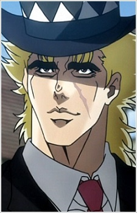

Дата рождения: 16 октября 1863
Возраст: 25 (Часть 1);75 (Часть 2)
Раса: Человек
Пол: Мужской
Национальность: Англичанин

Роберт Э. О. Спидвагон
Информация
Описание
Роберт Э. О. Спидвагон (ロバート・E・O・スピードワゴン Robāto Ī Ō Supīdowagon) — главный союзник, появившийся в первой части серии Невероятные приключения ДжоДжо, Призрачная кровь. Бывший Лондонский бандит, проживающий в Огр-Стрит, Спидвагон сдруживается с Джонатаном Джостаром и становится верным союзником его дела.
В Боевом стремлении, Спидвагон возвращается как богатый бизнесмен и второстепенный союзник внука Джонатана, Джозефа Джостара. Его организация, Фонд Спидвагона, продолжает поддерживать Семью Джостар на протяжении истории, особенно в Крестоносцах звёздной пыли, Несокрушимом алмазе и Каменном океане.
В Боевом стремлении, Спидвагон возвращается как богатый бизнесмен и второстепенный союзник внука Джонатана, Джозефа Джостара. Его организация, Фонд Спидвагона, продолжает поддерживать Семью Джостар на протяжении истории, особенно в Крестоносцах звёздной пыли, Несокрушимом алмазе и Каменном океане.
Манга
Аниме